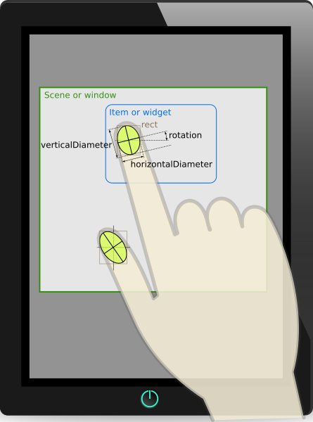

TouchPoint Class
Class TouchPoint is declared in class QTouchEvent.The TouchPoint class provides information about a touch point in a QTouchEvent. More...
This class was introduced in Qt 4.6.
Public Types
Public Functions
| TouchPoint(TouchPoint &&other) | |
| QSizeF | ellipseDiameters() const |
| TouchPoint::InfoFlags | flags() const |
| int | id() const |
| QPointF | lastNormalizedPos() const |
| QPointF | lastPos() const |
| QPointF | lastScenePos() const |
| QPointF | lastScreenPos() const |
| QPointF | normalizedPos() const |
| QPointF | pos() const |
| qreal | pressure() const |
| QVector<QPointF> | rawScreenPositions() const |
| qreal | rotation() const |
| QPointF | scenePos() const |
| QPointF | screenPos() const |
| QPointF | startNormalizedPos() const |
| QPointF | startPos() const |
| QPointF | startScenePos() const |
| QPointF | startScreenPos() const |
| Qt::TouchPointState | state() const |
| QPointingDeviceUniqueId | uniqueId() const |
| QVector2D | velocity() const |
Detailed Description

Member Type Documentation
enum TouchPoint::InfoFlag
flags TouchPoint::InfoFlags
The values of this enum describe additional information about a touch point.
| Constant | Value | Description |
|---|---|---|
QTouchEvent::TouchPoint::Pen | 0x0001 | Indicates that the contact has been made by a designated pointing device (e.g. a pen) instead of a finger. |
QTouchEvent::TouchPoint::Token | 0x0002 | Indicates that the contact has been made by a fiducial object (e.g. a knob or other token) instead of a finger. |
The InfoFlags type is a typedef for QFlags<InfoFlag>. It stores an OR combination of InfoFlag values.
Member Function Documentation
TouchPoint::TouchPoint(TouchPoint &&other)
Move-constructs a TouchPoint instance, making it point to the same object that other was pointing to.
QSizeF TouchPoint::ellipseDiameters() const
Returns the width and height of the bounding ellipse of this touch point. The return value is in logical pixels. Most touchscreens do not detect the shape of the contact point, so a null size is the most common value. In other cases the diameters may be nonzero and equal (the ellipse is approximated as a circle).
This function was introduced in Qt 5.9.
TouchPoint::InfoFlags TouchPoint::flags() const
Returns additional information about the touch point.
See also QTouchEvent::TouchPoint::InfoFlags.
int TouchPoint::id() const
Returns the id number of this touch point.
Do not assume that id numbers start at zero or that they are sequential. Such an assumption is often false due to the way the underlying drivers work.
QPointF TouchPoint::lastNormalizedPos() const
Returns the normalized position of this touch point from the previous touch event.
The coordinates are normalized to the size of the touch device, i.e. (0,0) is the top-left corner and (1,1) is the bottom-right corner.
See also normalizedPos() and startNormalizedPos().
QPointF TouchPoint::lastPos() const
Returns the position of this touch point from the previous touch event, relative to the widget or QGraphicsItem that received the event.
See also pos() and startPos().
QPointF TouchPoint::lastScenePos() const
Returns the scene position of this touch point from the previous touch event.
The scene position is the position in QGraphicsScene coordinates if the QTouchEvent is handled by a QGraphicsItem::touchEvent() reimplementation, and identical to the screen position for widgets.
See also scenePos() and startScenePos().
QPointF TouchPoint::lastScreenPos() const
Returns the screen position of this touch point from the previous touch event.
See also screenPos() and startScreenPos().
QPointF TouchPoint::normalizedPos() const
Returns the normalized position of this touch point.
The coordinates are normalized to the size of the touch device, i.e. (0,0) is the top-left corner and (1,1) is the bottom-right corner.
See also startNormalizedPos(), lastNormalizedPos(), and pos().
QPointF TouchPoint::pos() const
Returns the position of this touch point, relative to the widget or QGraphicsItem that received the event.
See also startPos(), lastPos(), screenPos(), scenePos(), and normalizedPos().
qreal TouchPoint::pressure() const
Returns the pressure of this touch point. The return value is in the range 0.0 to 1.0.
QVector<QPointF> TouchPoint::rawScreenPositions() const
Returns the raw, unfiltered positions for the touch point. The positions are in native screen coordinates. To get local coordinates you can use mapFromGlobal() of the QWindow returned by QTouchEvent::window().
Note: Returns an empty vector if the touch device's capabilities do not include QTouchDevice::RawPositions.
Note: Native screen coordinates refer to the native orientation of the screen which, in case of mobile devices, is typically portrait. This means that on systems capable of screen orientation changes the positions in this list will not reflect the current orientation (unlike pos(), screenPos(), etc.) and will always be reported in the native orientation.
This function was introduced in Qt 5.0.
See also QTouchDevice::capabilities(), device(), and window().
qreal TouchPoint::rotation() const
Returns the angular orientation of this touch point. The return value is in degrees, where zero (the default) indicates the finger or token is pointing upwards, a negative angle means it's rotated to the left, and a positive angle means it's rotated to the right. Most touchscreens do not detect rotation, so zero is the most common value.
This function was introduced in Qt 5.8.
QPointF TouchPoint::scenePos() const
Returns the scene position of this touch point.
The scene position is the position in QGraphicsScene coordinates if the QTouchEvent is handled by a QGraphicsItem::touchEvent() reimplementation, and identical to the screen position for widgets.
See also startScenePos(), lastScenePos(), and pos().
QPointF TouchPoint::screenPos() const
Returns the screen position of this touch point.
See also startScreenPos(), lastScreenPos(), and pos().
QPointF TouchPoint::startNormalizedPos() const
Returns the normalized starting position of this touch point.
The coordinates are normalized to the size of the touch device, i.e. (0,0) is the top-left corner and (1,1) is the bottom-right corner.
See also normalizedPos() and lastNormalizedPos().
QPointF TouchPoint::startPos() const
Returns the starting position of this touch point, relative to the widget or QGraphicsItem that received the event.
QPointF TouchPoint::startScenePos() const
Returns the starting scene position of this touch point.
The scene position is the position in QGraphicsScene coordinates if the QTouchEvent is handled by a QGraphicsItem::touchEvent() reimplementation, and identical to the screen position for widgets.
See also scenePos() and lastScenePos().
QPointF TouchPoint::startScreenPos() const
Returns the starting screen position of this touch point.
See also screenPos() and lastScreenPos().
Qt::TouchPointState TouchPoint::state() const
Returns the current state of this touch point.
QPointingDeviceUniqueId TouchPoint::uniqueId() const
Returns the unique ID of this touch point or token, if any.
It is normally invalid (see isValid()), because touchscreens cannot uniquely identify fingers. But when the Token flag is set, it is expected to uniquely identify a specific token (fiducial object).
This function was introduced in Qt 5.8.
See also flags.
QVector2D TouchPoint::velocity() const
Returns a velocity vector for this touch point. The vector is in the screen's coordinate system, using pixels per seconds for the magnitude.
Note: The returned vector is only valid if the touch device's capabilities include QTouchDevice::Velocity.
See also QTouchDevice::capabilities() and device().